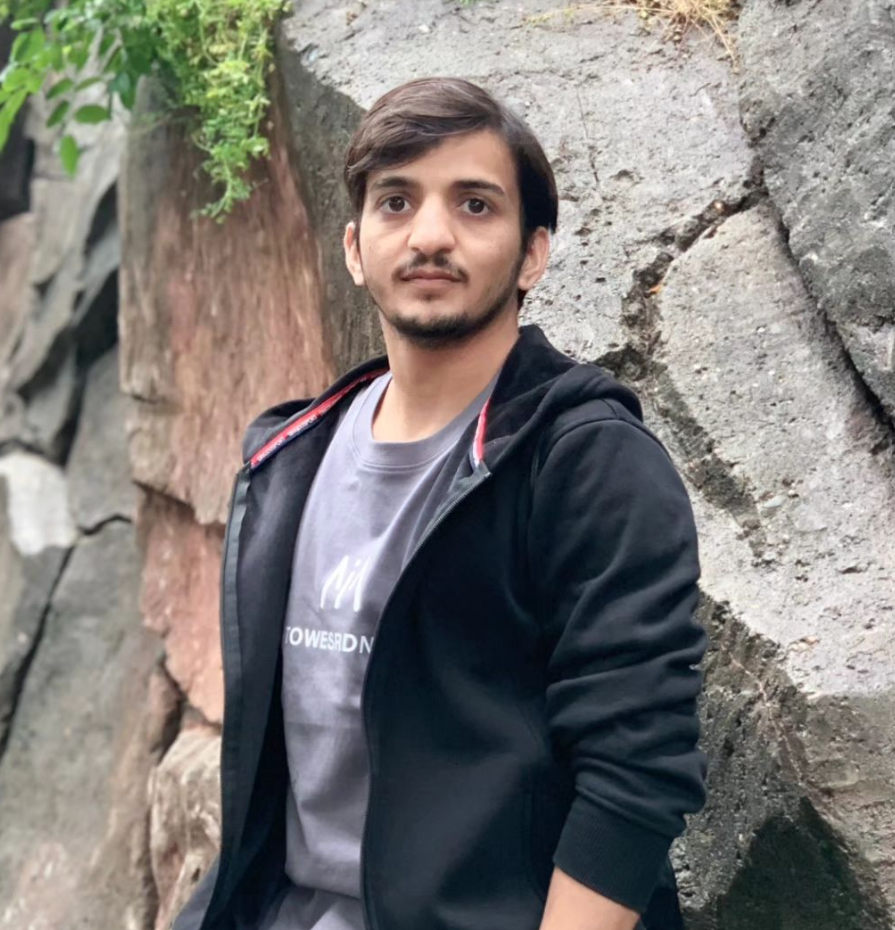

01
Edge-aware medical imaging
Dual-path networks that explicitly model boundary information alongside texture and semantic features for robust medical image classification.
I develop efficient and trustworthy deep learning methods for medical image analysis, with a focus on edge-aware representation learning, federated optimization, and privacy-preserving healthcare AI.

I am an AI researcher focused on building accurate, efficient, and practically deployable learning systems for medical data.
My research centers on medical image analysis, deep learning, and federated learning. I am particularly interested in methods that remain effective under realistic clinical constraints such as limited data, class imbalance, non-IID distributions, and subtle anatomical boundaries.
At USTC, my master’s research developed an edge-aware dual-path architecture for medical image classification and an adaptive federated learning extension for distributed clinical settings.
My work combines representation learning, efficient architectures, federated optimization, and trustworthy machine learning.
Dual-path networks that explicitly model boundary information alongside texture and semantic features for robust medical image classification.
Client- and layer-aware optimization strategies designed for non-IID and class-imbalanced distributed medical datasets.
Research directions spanning privacy-preserving learning, uncertainty, calibration, selective prediction, and robust deployment.
Peer-reviewed work in medical imaging, federated learning, and deep learning.
Muhammad Hamza Mehmood, Xinming Zhang, Emmanuel U. Ugwu
Machine Vision and Applications, Springer, Vol. 37, Article 30.
Muhammad Hamza Mehmood, M. I. Khan, A. Ibrahim
DSIT 2024, IEEE.
F. Hassan, A. U. Rahman, Muhammad Hamza Mehmood, et al.
Multimedia Tools and Applications, Springer.
Muhammad Hamza Mehmood, F. Hassan, A. U. Rahman, et al.
C-CODE 2023, IEEE.
Applied research in computer vision and AI systems, with an emphasis on experimentation and practical deployment.
Research on medical image classification, edge-aware representation learning, federated learning, and privacy-preserving AI.
Machine learning and deep learning research for medical imaging and biomedical signal analysis.
Major in Computer Science and Technology. Thesis on edge-aware dual-path modeling and adaptive federated learning for medical image classification.
Core training in software engineering, artificial intelligence, machine learning, image processing, and computer vision.
Capabilities are grouped by research area rather than arbitrary proficiency percentages.
I welcome conversations about research collaboration, PhD opportunities, and AI projects in medical imaging and trustworthy machine learning.
Email is the best way to reach me for research-related enquiries.